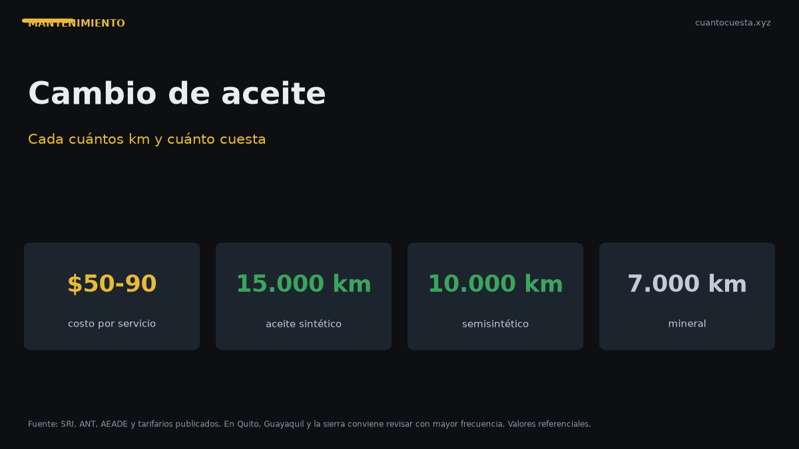

Cambio de aceite en Ecuador: cada cuántos km y cuánto cuesta (2026)
Cuánto cuesta el cambio de aceite en Ecuador, cada cuántos km hacerlo según el tipo de aceite y por qué en Quito y Guayaquil conviene más seguido.

Un cambio de aceite y filtro en Ecuador cuesta entre $50 y $90 en talleres certificados, y el intervalo depende del tipo de aceite: cada 5.000-7.000 km si es mineral, 7.000-10.000 km si es semisintético y 10.000-15.000 km si es sintético. Ese rango de precio corresponde a un SUV como la Kia Sportage; en un auto compacto suele quedar en la parte baja.
Lo que casi nadie menciona es que el intervalo del manual no siempre aplica tal cual en Ecuador. El tránsito de Quito y Guayaquil, la altitud de la sierra y el polvo de la costa acortan la vida útil del aceite.
Cuánto cuesta un cambio de aceite en Ecuador
En talleres certificados, un servicio de cambio de aceite y filtro de aceite para un SUV mediano se ubica en $50 a $90. El precio varía por:
- Tipo de aceite: el sintético cuesta más por litro, pero dura el doble.
- Cantidad: un motor 1.4L lleva menos aceite que un 2.0L o un diésel.
- Ciudad: los precios de mano de obra no son iguales en Quito, Guayaquil y Cuenca.
- Taller: concesionario y taller independiente tienen tarifas distintas.
El precio del cambio de aceite no se decide solo por el litro de aceite. El filtro, la mano de obra y el tipo de aceite pesan casi igual en la factura final.
Cada cuántos km cambiar el aceite según el tipo
| Tipo de aceite | Intervalo por km | Intervalo por tiempo |
|---|---|---|
| Sintético | 10.000 - 15.000 km | 6 meses |
| Semisintético | 7.000 - 10.000 km | 6 meses |
| Mineral | 5.000 - 7.000 km | 3 a 6 meses |
Se cumple el que llegue primero, no el que te convenga. Un auto que rueda poco también envejece el aceite: la humedad y los ciclos de arranque en frío lo degradan aunque el kilometraje sea bajo.
Por qué en Ecuador conviene cambiar más seguido
El intervalo estirado funciona en carretera abierta y a velocidad constante. En Ecuador ese escenario es la excepción:
Tránsito pesado en Quito y Guayaquil
El tránsito de las dos ciudades más grandes del país significa arranques y frenadas constantes, el motor trabaja más horas para recorrer menos kilómetros y el aceite se contamina antes. Si usas el auto casi solo en horas pico, revisa el nivel cada dos semanas y no estires el intervalo.
Altitud en la sierra
En Quito, Ambato, Cuenca y Loja el motor trabaja a más de 2.500 metros sobre el nivel del mar. La mezcla y la temperatura de combustión cambian, y eso afecta la degradación del aceite con el tiempo.
Polvo y humedad en la costa y la Amazonía
En Guayaquil, Manta y las zonas amazónicas, la combinación de polvo y humedad exige revisar el filtro de aire con más frecuencia y adelantar el cambio si el vehículo circula por vías sin pavimentar.
Qué incluye un cambio de aceite completo
Un servicio serio no es solo drenar el aceite. Debería incluir:
- Aceite nuevo del tipo que especifica el fabricante.
- Filtro de aceite nuevo — reemplazarlo siempre, no limpiarlo.
- Revisión del nivel de refrigerante, líquido de frenos y líquido de dirección.
- Inspección visual de fugas en el cárter y alrededor del filtro.
- Registro del kilometraje en la factura o el libro de mantenimiento.
Pedir el filtro viejo y verificar el sello del envase de aceite evita el servicio "de vitrina" donde se cobra el cambio y no se hace.
Otros filtros que se cambian en el mismo servicio
| Componente | Precio referencial | Intervalo |
|---|---|---|
| Filtro de aire | $20 - $40 | Cada 10.000 km |
| Filtro de combustible | $30 - $60 | Cada 15.000 km |
| Líquido de frenos | $40 - $70 | Cada 30.000 km |
| Bujías | $50 - $100 | Cada 40.000 km |
Cuánto pesa el mantenimiento en el costo por km
Un tarifario oficial de concesionario en Quito permite ver cómo escala el costo del mantenimiento por kilometraje:
| Servicio | Costo referencial |
|---|---|
| 10.000 km | $333,41 |
| 20.000 km | $434,21 |
| 30.000 km | $489,00 |
| 40.000 km | $595,24 |
| 50.000 km | $689,67 |
| 60.000 km | $799,85 |
| 100.000 km | $763,27 |
El costo promedio por kilómetro en ese tarifario es de $0,048. Es decir, cada 100.000 km de recorrido acumulan alrededor de $4.800 en mantenimiento programado. Ese número, más que el precio de un cambio de aceite aislado, es el que deberías tener en cuenta al presupuestar.
Los servicios de 60.000 y 100.000 km son los más caros porque incluyen correa de distribución, que por sí sola cuesta entre $250 y $400, y otros componentes de desgaste mayor.
Cuándo cambiar el aceite es tirar dinero
No siempre "cambiar antes" es mejor. Hay tres casos donde el gasto extra no te devuelve nada:
- Cambiar aceite sintético cada 5.000 km. Si el motor pide sintético y tiene 10.000-15.000 km de intervalo, adelantarlo a 5.000 no alarga la vida del motor de forma significativa. Sí tiene sentido si haces 100% tránsito urbano en Quito o Guayaquil y el auto pasa meses sin llegar al kilometraje recomendado.
- Usar aceite de especificación superior a la que exige el fabricante solo porque "es mejor". Si el manual admite semisintético, pagar el doble por sintético no cambia el resultado.
- Pagar el paquete del concesionario cuando el auto ya salió de garantía y no hay problema mecánico. El paquete sirve mientras protege la garantía; después, un taller independiente serio cobra menos por lo mismo.
Si el vehículo está en garantía, respeta los intervalos y usa el aceite que indica el manual. Saltarte un servicio puede anular la garantía — la del Kia Soluto llega a 10 años o 160.000 km, y perderla sale mucho más caro que un cambio de aceite.
Cómo saber si te están cobrando de más
- Pide el desglose por escrito: aceite, filtro, mano de obra. Un solo precio global no permite comparar.
- Verifica cuántos litros lleva tu motor y compara con lo que facturan.
- Cotiza en dos talleres al menos una vez al año. La diferencia en un cambio de aceite suele ser de $15 a $30.
- Desconfía del aditivo "milagroso" que se suma a la factura sin que lo hayas pedido.
Resumen práctico
- Costo del cambio de aceite y filtro: $50 a $90 en talleres certificados.
- Intervalo: mineral cada 5.000-7.000 km, semisintético cada 7.000-10.000 km, sintético cada 10.000-15.000 km, o 6 meses si ruedas poco.
- En Quito y Guayaquil, con tránsito pesado, conviene acortar el intervalo.
- En sierra, costa y Amazonía revisa el filtro de aire con más frecuencia.
- El mantenimiento acumulado equivale a cerca de $0,048 por km.
- Los valores son referenciales y varían por ciudad, taller y modelo. Confirma el precio antes de dejar el vehículo.
Sigue leyendo
Cuánto cuesta mantener un auto por marca en Ecuador: tabla comparativa 2026
Tabla del costo anual real de mantenimiento por marca en Ecuador 2026 y cuánto suma esa diferen
Top 10: cuánto cuesta mantener cada auto al mes en Ecuador (2026)
Desglose del costo mensual real de mantener los autos más vendidos de Ecuador: matrícula, segur
Cómo usamos estos datos
Las cifras de esta guía provienen de fuentes públicas oficiales y tarifarios de concesionarios publicados. Los valores son referenciales: tasas municipales, promociones y precios de repuestos varían. Verifica siempre en la entidad o concesionario antes de decidir.